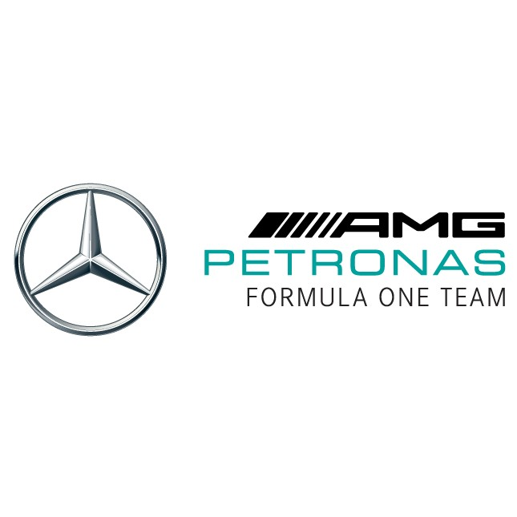

Lewis hamilton
Lewis Hamilton est un pilote de Formule 1 britannique légendaire, sept fois champion du monde. Il a débuté sa carrière avec McLaren en 2007 et a depuis remporté de nombreux titres avec Mercedes. Sa détermination et son talent en font l'un des plus grands noms de l'histoire de ce sport.
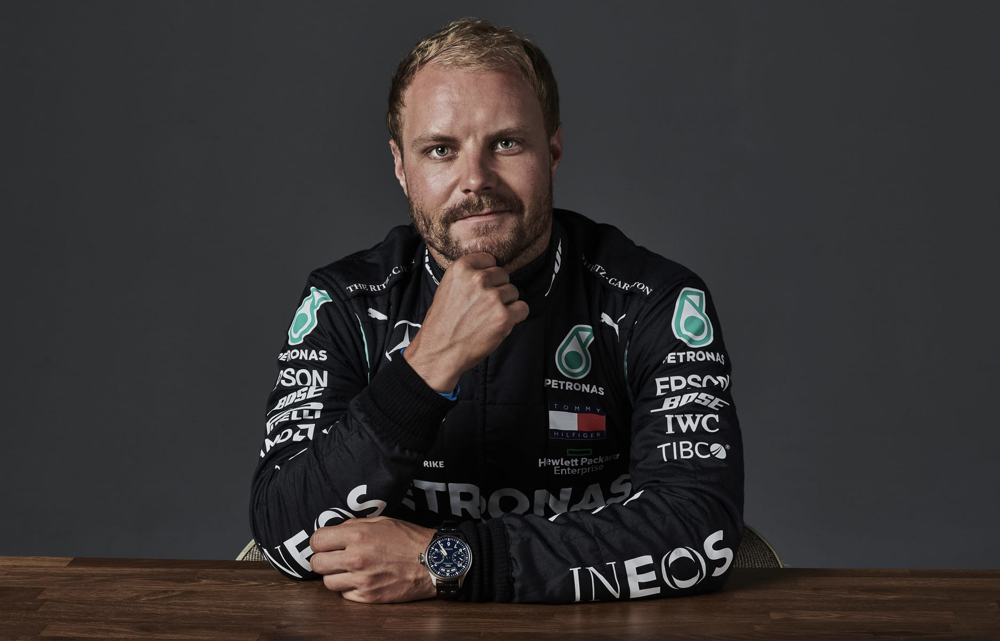
Valtteri Bottas
Valtteri Bottas est un pilote de Formule 1 finlandais qui a fait ses débuts en 2013. Il a rejoint Mercedes en 2017 et est un coéquipier de Lewis Hamilton. Bottas est reconnu pour sa vitesse et sa constance sur la piste, contribuant au succès de Mercedes sans avoir remporté de titre mondial.


Max Verstappen
Max Verstappen est un pilote de Formule 1 néerlandais qui a débuté en 2015. Rejoignant Red Bull Racing en 2016, il est connu pour sa vitesse et son agressivité sur la piste. Verstappen est un talent prometteur, rivalisant régulièrement avec les meilleurs pilotes du monde sans avoir encore remporté de titre mondial.

Serio Perez
Sergio Perez est un pilote mexicain de Formule 1, ayant débuté en 2011. Il a rejoint Red Bull Racing en 2021 après avoir couru pour Racing Point (Aston Martin) et McLaren. Perez est réputé pour sa constance et sa capacité à marquer des points importants pour son équipe, malgré l'absence d'un titre mondial à son actif.
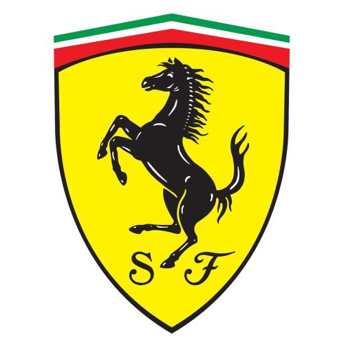

Charles Leclerc
Charles Leclerc est un pilote monégasque de Formule 1, reconnu pour son talent exceptionnel et sa vitesse sur la piste. Il a débuté en 2018 avec Alfa Romeo Sauber avant de rejoindre Ferrari la même année. Leclerc est considéré comme l'un des jeunes pilotes les plus prometteurs du sport automobile, avec plusieurs victoires en Grand Prix à son actif malgré son jeune âge.

Carlos Sazinz
Carlos Sainz est un pilote espagnol de Formule 1. Passé par McLaren et Toro Rosso, il a rejoint Ferrari en 2021. Sainz est connu pour sa compétitivité et son engagement sur la piste, faisant de lui un pilote fiable et solide. Bien qu'il n'ait pas remporté de titre mondial, Sainz est respecté pour ses performances constantes et son potentiel dans le championnat de Formule 1.
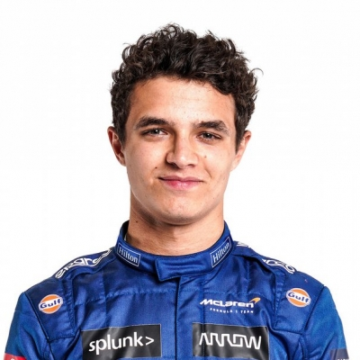
Lando Norris
Lando Norris est un pilote britannique de Formule 1 arrivé chez McLaren en 2019. Il se démarque par sa vitesse et sa constance sur la piste, rivalisant avec succès contre des pilotes plus expérimentés. Considéré comme l'un des jeunes talents les plus prometteurs, Norris est apprécié pour son attitude positive et son talent naturel remarquables.
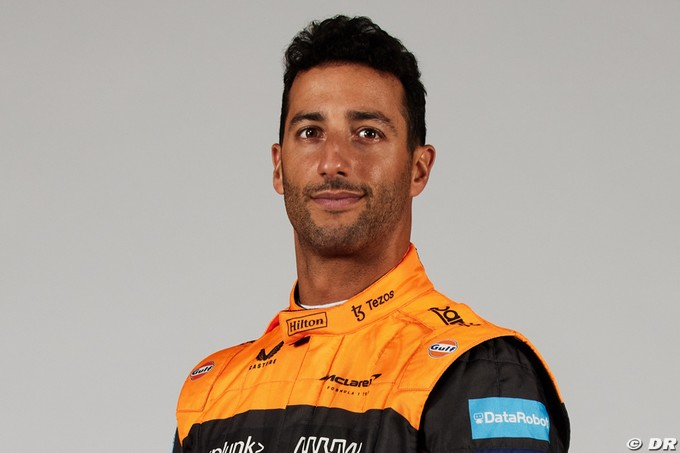
Daniel Ricciardo
Daniel Ricciardo est un pilote de Formule 1 australien très apprécié pour son style flamboyant et son optimisme. Après avoir couru pour Red Bull Racing et Renault, il a rejoint McLaren en 2021. Bien qu'il n'ait pas remporté de titre mondial, Ricciardo a décroché plusieurs victoires en Grand Prix et reste très populaire grâce à son charisme et à son talent sur la piste.
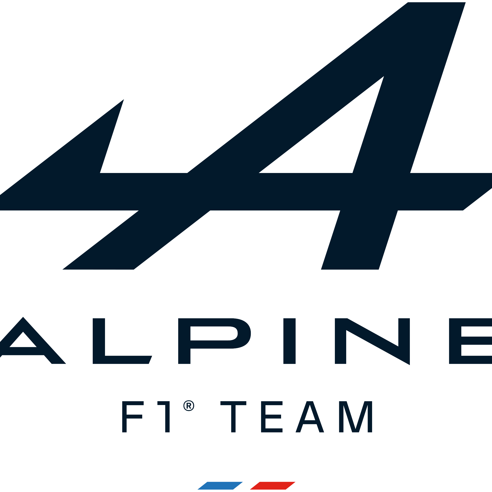
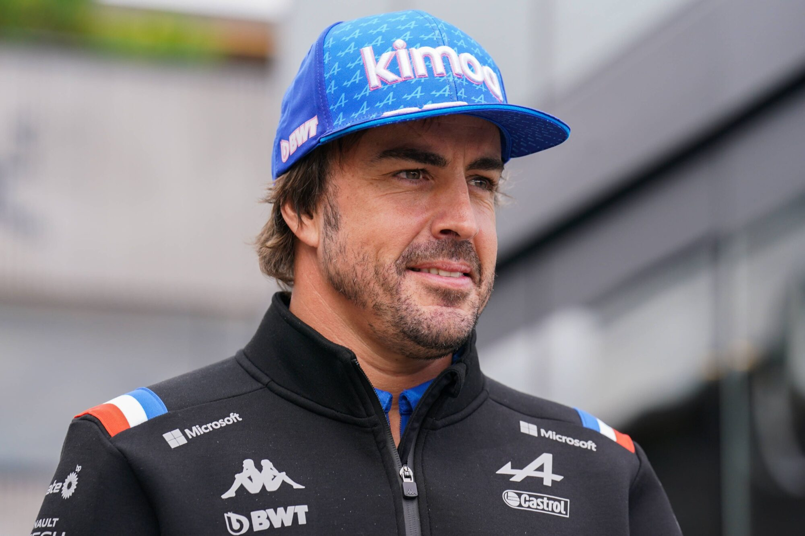
Fernando Alonso
Fernando Alonso est un pilote espagnol de Formule 1, champion du monde en 2005 et 2006. Après une pause, il est revenu en 2021 avec l'équipe Alpine. Alonso est réputé pour son talent et son agressivité sur la piste, restant un compétiteur redoutable malgré son expérience.

Esteban Ocon
Esteban Ocon est un pilote français de Formule 1, arrivé en 2016. Il a rejoint Alpine en 2020 et se distingue par sa compétitivité et son potentiel sur la piste. Bien qu'il n'ait pas encore remporté de titre mondial, Ocon est un pilote prometteur à suivre dans le monde de la Formule 1.
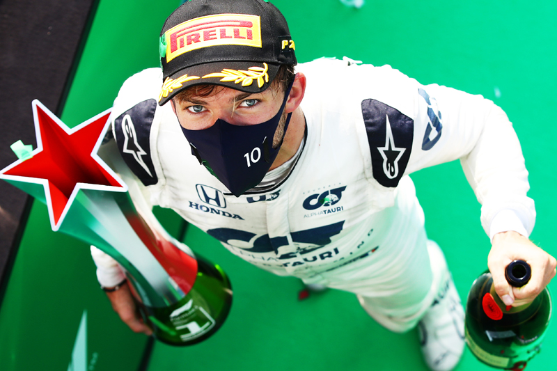
Pierre Gasly
Pierre Gasly est un pilote français de Formule 1, actif depuis 2017. Connu pour sa détermination et ses performances impressionnantes, notamment sa victoire au Grand Prix d'Italie en 2020, Gasly est un talent prometteur dans le monde de la Formule 1.
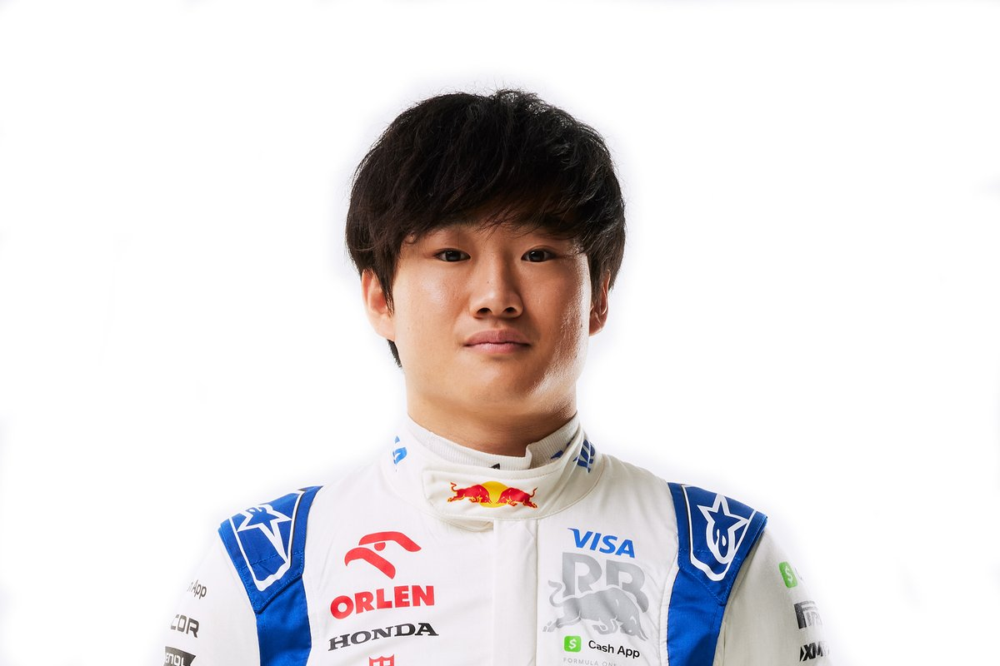
Yuki Tsunoda
Yuki Tsunoda est un pilote japonais de Formule 1, arrivé en 2021. Malgré sa récente entrée dans le championnat, Tsunoda a montré un talent prometteur avec AlphaTauri. Il est considéré comme un jeune pilote à surveiller pour l'avenir de la Formule 1.
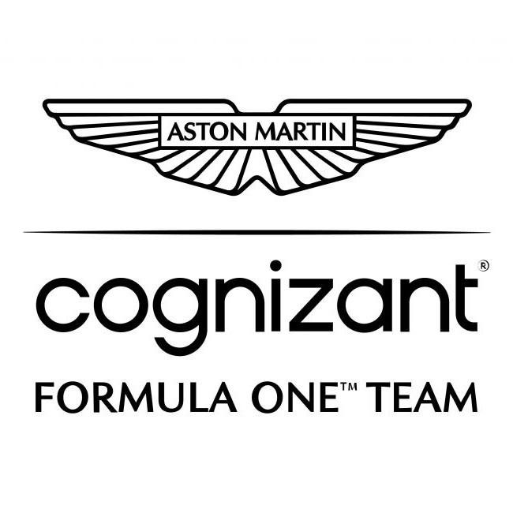
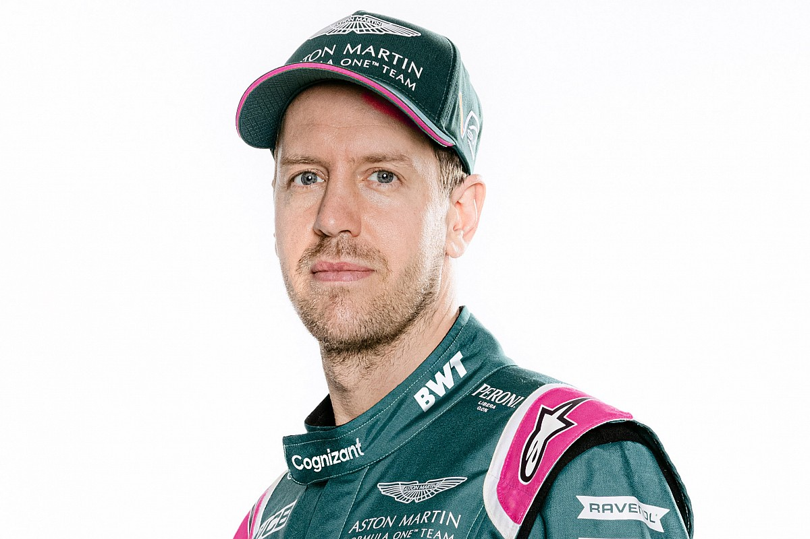
Sebastian Vttel
Sebastian Vettel est un pilote allemand de Formule 1, quadruple champion du monde avec Red Bull Racing. En 2021, il a rejoint Aston Martin après avoir couru pour Ferrari. Vettel est réputé pour son expérience et ses compétences sur la piste, restant un pilote compétitif et respecté dans le championnat.
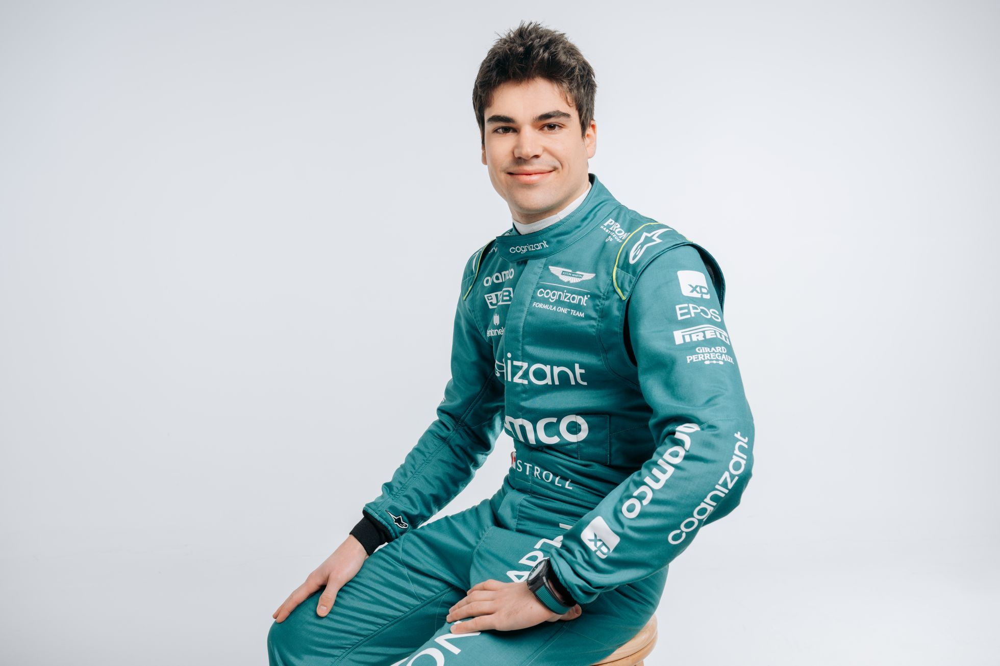
Lance Stroll
Lance Stroll est un pilote de Formule 1 canadien, actif depuis 2017. Il a rejoint Racing Point (maintenant Aston Martin) et s'est distingué par sa compétitivité sur la piste. Stroll est considéré comme un pilote prometteur malgré son jeune âge, apportant une énergie dynamique à la grille de départ de la Formule 1.
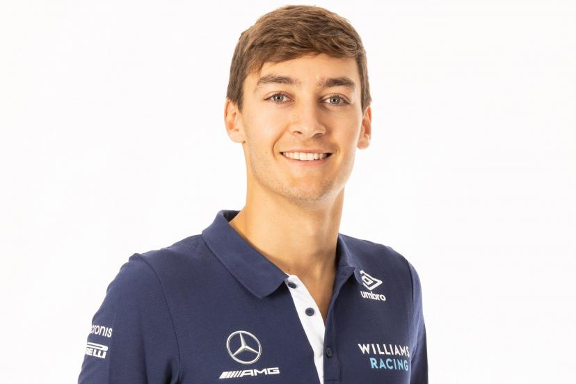
Georges Russell
George Russell est un pilote britannique de Formule 1, actif depuis 2019 avec Williams. Réputé pour son talent et sa vitesse, Russell est un jeune pilote prometteur à suivre dans le sport automobile.
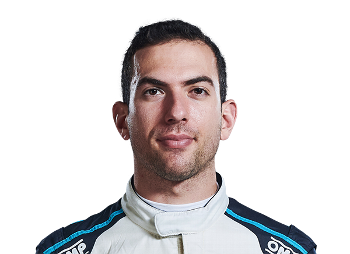
Nicholas Latifi
Nicholas Latifi est un pilote canadien de Formule 1, participant depuis 2019 avec l'équipe Williams. Latifi est connu pour sa détermination sur la piste, représentant un talent prometteur dans le championnat de Formule 1.
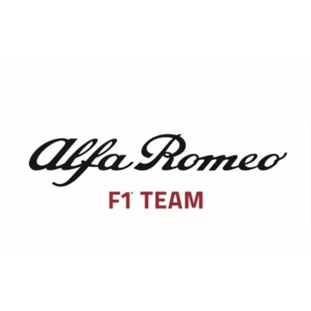
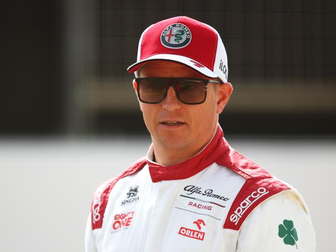
Kimi Räikkönen
Kimi Räikkönen est un pilote finlandais de Formule 1, actif depuis 2001. Champion du monde en 2007, Räikkönen est réputé pour son style de conduite calme et efficace. Avec sa longue carrière et son expérience, il reste un pilote respecté et apprécié dans le monde de la Formule 1.
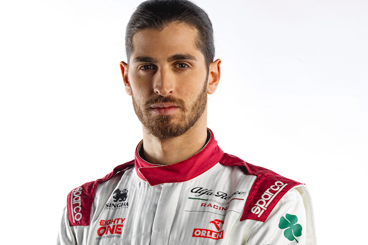
Antonio Giovinazzi
Antonio Giovinazzi est un pilote italien de Formule 1, en activité depuis 2017 avec Alfa Romeo Racing. Giovinazzi est connu pour sa détermination sur la piste et sa progression constante dans le championnat. Bien qu'il n'ait pas encore atteint les sommets, Giovinazzi représente un talent solide dans le monde de la Formule 1.
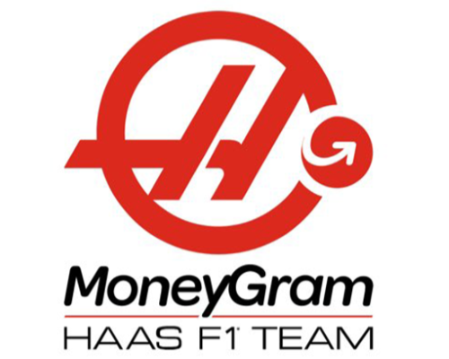
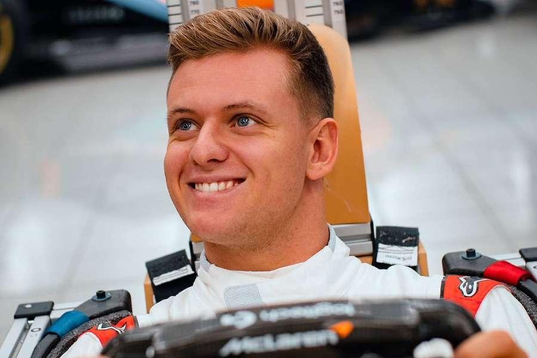
Mick Schumacher
Mick Schumacher est un pilote allemand de Formule 1, faisant ses débuts en 2021 avec Haas F1 Team. Fils de Michael Schumacher, légende de la F1, Mick Schumacher est reconnu pour son héritage et son potentiel prometteur. Malgré les défis rencontrés avec une équipe en reconstruction, il représente l'avenir de ce sport emblématique.